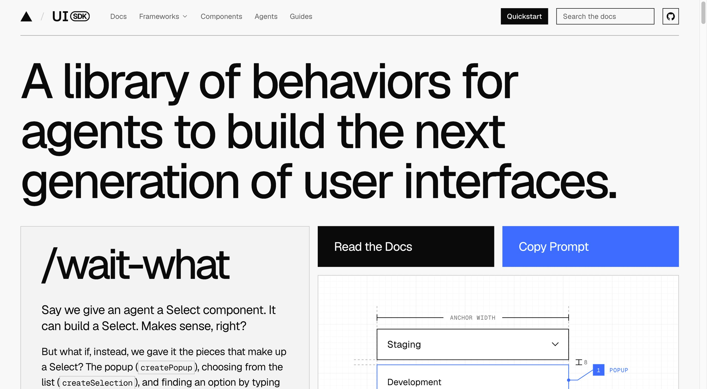

开源仓库精读
01 / 08
AI 会写界面，
却总写错
键盘导航
Vercel 开源
UI SDK
：不是又一个组件库，而是组件库底下那一层——可复用、可测试的「行为」。

官网首页原话：A library of behaviors for agents to build the next generation of user interfaces.
github.com/vercel-labs/ui
ui-sdk.dev · beta
SOMEONE ONCE SAID